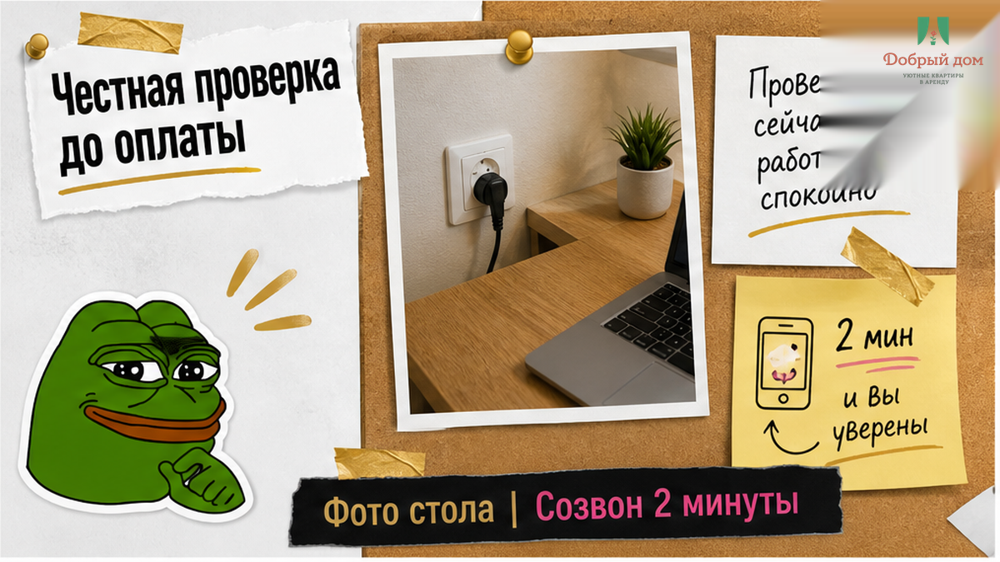
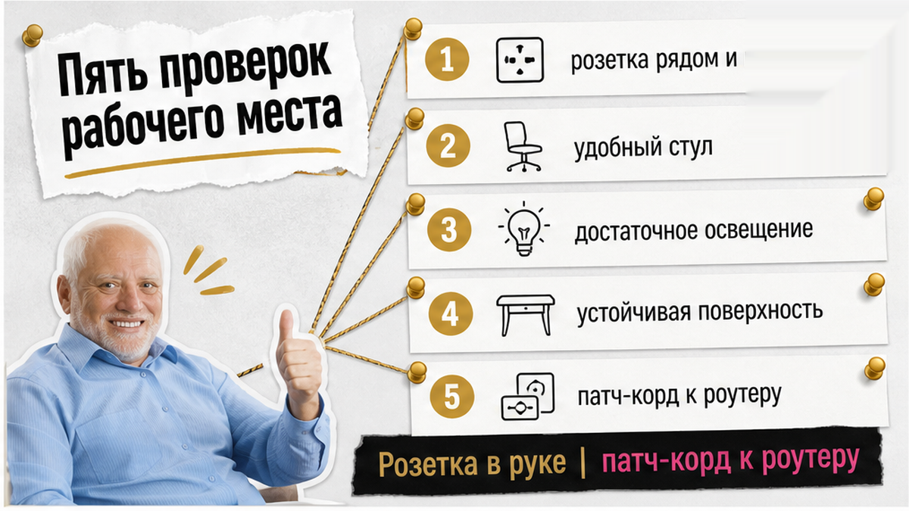
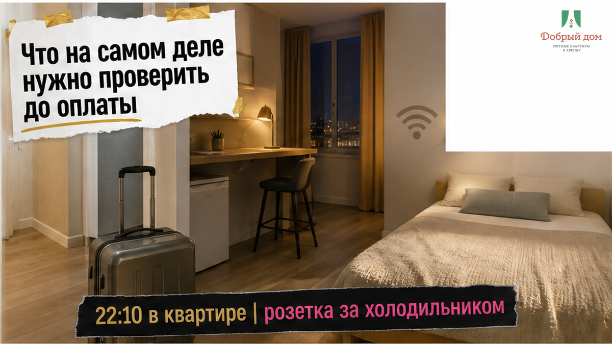
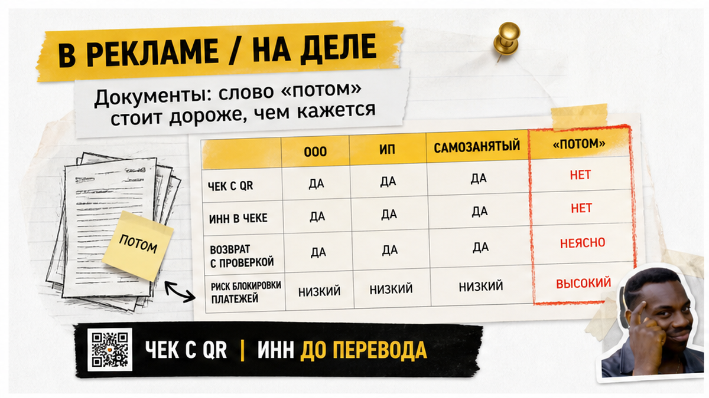
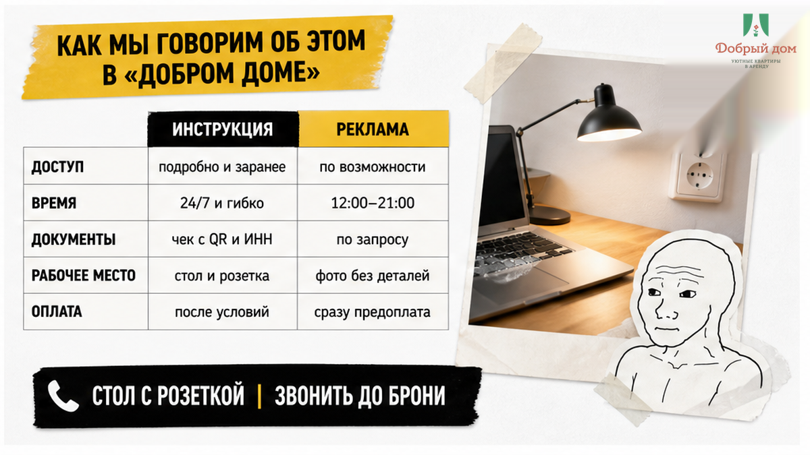
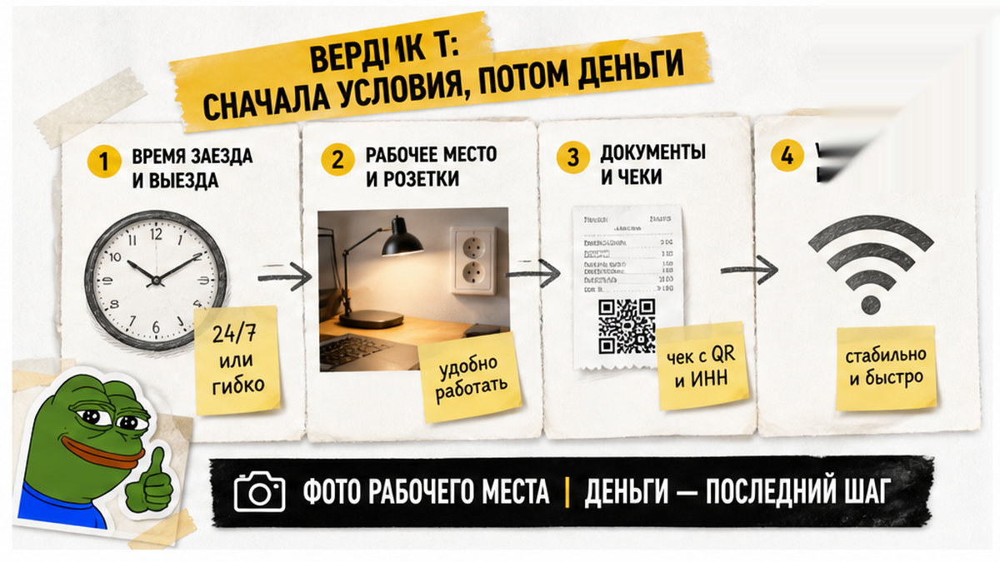
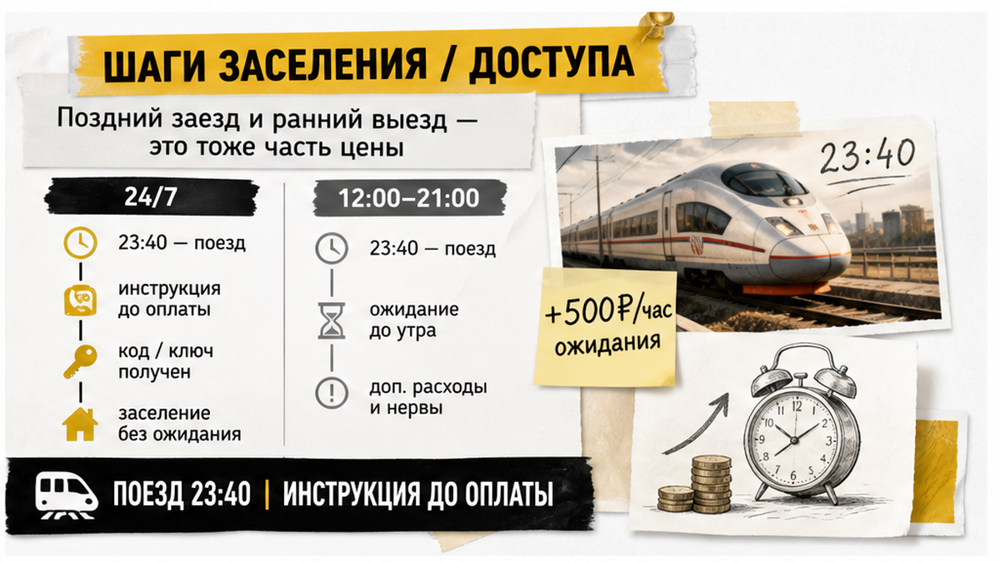

Гость зашёл в квартиру в Тюмени в 22:10. За спиной — командировка, поезд и тюменский август, когда даже ночью воздух не спешит остывать. Впереди — видеозвонок с заказчиком в 10:00: камера включена, сорок минут доклада, зависнуть нельзя. Он выбирал жильё не по красивой кухне. В карточке были нужные слова: «рабочий стол, Wi-Fi, документы для отчёта». Ориентир по рынку — от 1,5 тыс. за сутки. Казалось, задача решена.
В квартире стола не оказалось. Была узкая кухонная столешница у окна: ноутбук помещался, локти — уже нет. Ближайшая розетка пряталась за холодильником, шнур до неё не доставал. Wi-Fi держался в коридоре, а в комнате видео рассыпалось на квадраты. На вопрос про чек для бухгалтерии хозяин ответил в мессенджере одним словом: «Потом». В 23:40 гость снова листал объявления — искал, где снять квартиру на сутки в Тюмени, уже с чемоданом в руках и с утренним звонком, который никуда не исчез.
Я хост посуточной в Тюмени. Это «Добрый дом». Такие сообщения ближе к полуночи приходят чаще, чем утренние заявки на бронь. Гость написал коротко: «Мне не нужен дизайн. Мне нужен стол, розетка рядом и интернет, который не падает в десять утра». И это очень точное описание командировочного жилья.
Слово «стол» в объявлении часто создаёт иллюзию, что рабочий день уже устроен. Вы видите на фотографии поверхность, ставите галочку и переходите к цене. Но рабочее место — это не один предмет мебели. Это поверхность под ноутбук, розетка на длину шнура, стабильная связь именно в этой комнате и документ, который придёт после оплаты. Уберите любой элемент — остальные три не спасут утренний созвон.



Начните не с вопроса «есть ли рабочий стол», а с конкретики. Попросите ответить письменно. Не потому, что хозяина нужно поймать на слове, а потому, что устное «там всё нормально» слишком быстро исчезает, когда вы уже стоите у подъезда.
Самая честная проверка — одно обычное фото: стол целиком, рядом розетка и стул. Не фотография из старого объявления и не аккуратный кадр без проводов, а снимок, сделанный сейчас. Если рабочее место действительно готово для работы, такой запрос не выглядит странным.
Была и другая проверка — интернет. Галочка «быстрый Wi-Fi» ещё не означает, что в 10:00 камера не застынет. Скорость в карточке чаще описывает тариф провайдера. Ваш видеозвонок живёт в конкретной точке квартиры, на конкретном канале и в тот момент, когда весь дом вернулся с работы.
Попросите хозяина сесть на будущий стул и включить видеозвонок в Telegram или MAX на две минуты. Нужен не скриншот теста скорости у окна, а живая картинка с рабочего места. Для видеосвязи важна отдача, а не только красивая цифра загрузки.
«Я не обещаю быстрый интернет. Я говорю: сядьте на этот стул, включите камеру и посмотрите на себя две минуты. Если картинка стоит — стол рабочий. Если рассыпается, я честно скажу: для ваших созвонов эта квартира не подходит».
Звучит скромно. И вот здесь ломается иллюзия: хозяин может не считать себя обманщиком, потому что у него действительно есть стол, Wi-Fi и документы. Просто он понимает эти слова шире, чем вы. Для него столом становится кухонная стойка, интернетом — сигнал в коридоре, а документами — обещание прислать когда-нибудь потом. В карточке стоят правильные галочки. В 10:00 работаете уже вы, а не карточка.
Из комментариев под прошлым разбором был вопрос: «Хост, а если у вас самих стол без розетки — вы же не признаетесь?» Признаюсь. Напишите название объекта в Telegram или MAX, и я попрошу назвать именно ту квартиру, о которой идёт речь. Пришлю фото стола с розеткой в кадре и покажу рабочее место на видео. Если квартира не подходит под ваши созвоны, лучше сказать это до оплаты.

Для командировочного вопрос «документы дадите?» слишком общий. На него легко ответить «дадим», не уточнив ни срок, ни форму, ни того, кто вообще выдаёт чек. Спрашивайте иначе: кто оформляет документы и что именно вы получите.
Форму 3-Г тоже лучше не принимать на веру. Это старый гостиничный бланк строгой отчётности, который бухгалтерии иногда продолжают просить по привычке. Основной документ сейчас — кассовый чек с QR-кодом: по нему чек можно проверить в приложении ФНС. Если вам предлагают «справку от руки, у нас все так ездят», риск остаётся у вас: расход могут не принять, и поездка частично выйдет из собственного кармана.
При безналичной оплате до перевода денег согласуйте четыре пункта: ИНН и реквизиты, срок выставления счёта, срок подготовки акта и способ передачи оригиналов — ЭДО, почта или скан с досылкой. Фраза «потом решим» почти всегда означает, что после выезда документы придётся выпрашивать из дома.
Осторожность нужна и с сервисами для бизнеса и агрегаторами. Документы может выдавать площадка, а не квартира. В них иногда фигурирует агентское вознаграждение вместо проживания. До оплаты проверьте, кто будет указан в чеке, совпадают ли даты проживания и как называется услуга.
Нормальное сообщение хозяину выглядит так: «Командировка, нужен отчёт. Вы ООО, ИП или самозанятый? Дадите договор, акт и кассовый чек с QR? Оплата по безналу — пришлите ИНН и реквизиты, скажите срок счёта и акта». Внятный ответ содержит статус и сроки. «Конечно, всё будет» — это пока не ответ. И с залогом та же история, что в материале «Снял квартиру посуточно. Залог не вернули — нашли скол на плите»: деньги, переведённые до всех договорённостей, возвращаются не легче, чем потом собираются документы.



В командировке вы платите не только за ночь. Поезд может прийти поздно, рабочий день закончиться после обычного времени заселения, а утром нужно открыть ноутбук ещё до того, как город окончательно проснётся.
Смотрите на объявление целиком. По объекту на 50 лет ВЛКСМ в шапке заявлено заселение 24/7, а ниже в правилах указано время приёма гостей с 12:00 до 21:00. В 22:30 у подъезда выяснится, какой из двух фактов настоящий. На Первомайской, 50 честно обозначено окно 14:00–22:00: если поезд приходит позже, заселение нужно отдельно согласовать. На Горького ранний заезд и поздний выезд стоят 500 ₽ за час. Это не обязательно обман, но это расход, который должен попасть в расчёт заранее. Два-три дополнительных часа — уже до 1,5 тыс., и «дешёвая» квартира внезапно выглядит иначе.
Попросите инструкцию по заезду до оплаты, а не после неё. В ней должны быть не только код или способ получить ключ, но и конкретное время встречи, возможность позднего приезда и условия выезда. О бесконтактном заселении мы уже писали в материале «Оплатил квартиру посуточно. Код прислали от чужой двери»: удобство начинается не с красивого слова, а с понятной инструкции, которую вы получили заранее.
И вот вопрос-отмычка: «Поезд 23:40, выезд 15:00 — сколько и кто встретит?» Ответьте себе не только на первую часть. Важны сразу цена каждого часа и человек, который действительно передаст ключ. Уклончивый ответ уже показывает, что сценарий не собран.
Ещё один практичный запрос — можно ли оставить чемодан после выезда до вечернего рейса. Для командировочного это иногда важнее, чем лишняя фотография кухни. Разрыв между картинкой и реальностью в посуточной аренде мы показывали на примере «Привезли сына к вузу — «рядом» оказалось 40 минут пешком».
Вердикт простой: сначала договариваетесь о времени заезда и выезда, столе с розеткой, Wi-Fi и пакете документов — и только потом платите. Деньги и ключ должны быть последним шагом переписки. Сначала — то, что спасает ваш первый рабочий час.
Если нужны свободные квартиры и условия без догадок, можно посмотреть наш канал в Telegram.
У нас так: инструкцию по заезду отправляем заранее, до оплаты, вместе с ответом о времени и стоимости дополнительного часа. Рабочий стол с розеткой рядом — не пожелание, а то, что показываем на фото. Вопрос с документами закрываем до перевода денег, а не после выезда. Мы не обещаем быть лучшими. Просто стараемся, чтобы командировка не превращалась в поиск розетки в 22:10.
Написать менеджеру можно в MAX или Telegram. Позвонить: +7 (993) 574-83-22. Посмотреть квартиры можно на сайте, а даты забронировать в разделе бронирования.